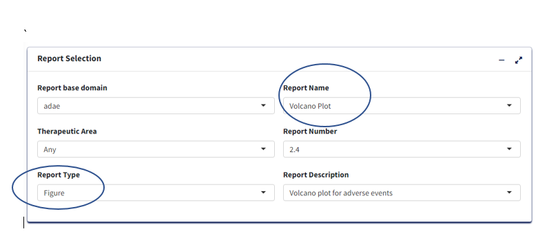
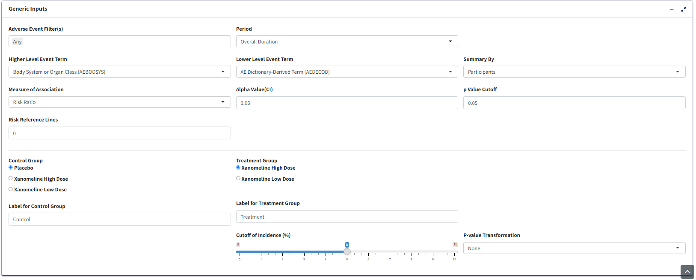
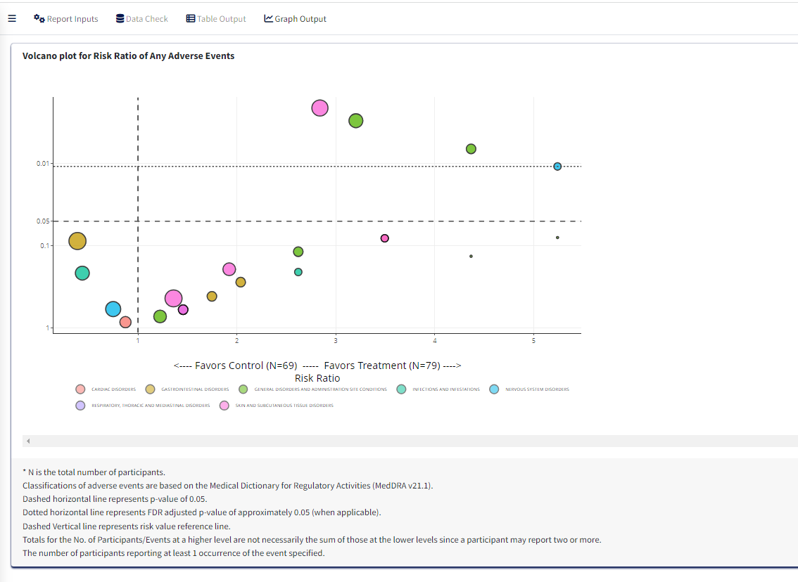

Volcano plot for Risk Ratio of Any Adverse Events
2025-03-12
Source:vignettes/volcano_plot.Rmd
volcano_plot.Rmd1. Introduction
This document details the steps for creating Volcano Plot using carver application which is a graph report. The required input ADaM data for this is an ADAE dataset.
1.1 Report Inputs in App
Upon loading/selecting ADAE data and clicking the Report
Inputs tab, report inputs can be added.
- Report Type as
Figureand Report Name asVolcano Plotfor the graph

Treatment/Population
Required
Under Treatment and Population Selection, select appropriate
Treatment Variable:
For table, Treatment Variable determines the columns and for Figure, determines how to differentiate groups by color.Select appropriate
Treatment Sort Variablewhich will give the order for sorting Treatment variable.To subset entire data based on population flags, select
Population Filter. eg. Overall, Safety (SAFFL).

Processing Data:
- Add or Edit the default
Analysis Subset ConditionandDenominator Subset Conditionto filter input data (for calculating categorical counts alone or for entire data respectively)
Select
Adverse Event Filter(s)- To filter input dataSelect
Period- To generate the figure by eitherOverall DurationorOther.Select
Summary By- It helps to select eitherParticipantsif the plot is to based on subject count orEventsif the plot is to based on AE counts.Select
Lower Level Event Term- This variable will help to generate the figure by AEBODSYS or FMQ Name etc., It is a type of scatterplot that shows statistical significance (P-value) versus magnitude of change (fold change).Select
Lower Level Event Term- This variable will help to generate the figure by AEDECOD or AELLT etc., It is a type of scatterplot that shows statistical significance (P-value) versus magnitude of change (fold change).select
Measure of Association- To generate the plot by eitherRisk RatioorRisk Difference.Select
Control Group- To choose the control treatment to compare with treatmentSelect
Treatment Group- To choose the treatment to compare with controlUpdate the
p Value Cutoff,Alpha Value(CI),Risk Reference LinesandCutoff of Incidence (%)as desired to generate the plot.

Graph Output:
- Click
Process Report Inputbutton and switch toGraph Outputtab to generate the graph.
